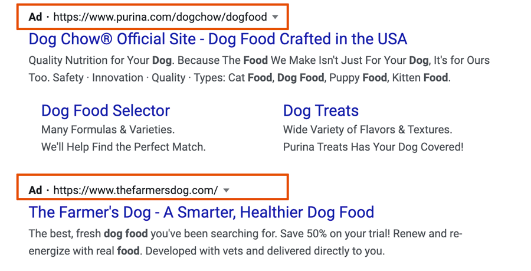

Marketing your website
When you have a website and nobody knows about it...
You have a website. Now What?
- How will you let people know your site is live?
- How is it going to be found?
- What are your marketing plans?
- What is your marketing budget?
- How are you going to make people stay in your site once they find it?
- How will you keep people coming back to your site?
Bringing traffic to your site
Content is King
- Create high-quality, useful, and easy-to-read content tailored to your audience
- Add FAQs, tutorials, and explainers
- Regularly update your existing content to keep it relevant and current
Optimize for Search (SEO)
- Do keyword research to find what people search for
- Use your keywords naturally in Titles, Headings, URL slugs, Meta Tags
- Always add alt text to images
Optimize for Generative Engines (GEO)
- Structure content for AI tools like ChatGPT, Perplexity, Claude, etc. by using clear headings, concise summaries and Q&A sections.
- Make sue you use facts and cite your sources clearly
- Write content that can be quoted or summarized (Definitions, guides, pros and cons etc.)
Make your content Shareable and Visual
- Add Social sharing buttons. How to add sharing buttons on webflow.
- Embed content from other platforms (YouTube, SounCloud, Vimeo, etc)
- Create and post visuals like infographics, reels, carousels, or short TikToks.
- Offer free resources (PDF guides, checklists, printables).
Bringing traffic to your site
Build Relationships & Collaborate
- Guest post on blogs or websites in your niche
- Add FAQs, tutorials, and explainers
- Regularly update your existing content to keep it relevant and current
Optimize for Search (SEO)
- Do keyword research to find what people search for
- Get interviewed or featured on podcasts, newsletters, or Substack
- Feature others in your content and ask them to share
Engage in Communities
- Answer questions on niche forums.
- Comment on relevant posts
- Write content that can be quoted or summarized (Definitions, guides, pros and cons etc.)
Build Strong Backlinks
- Ask collaborators, directories, or past clients to link to you
- Submit your site to relevant online directories or portfolios
Promote Across Channels
- Share your website in Social media channels, email signature, business cards, event banners etc.
Technical Setup & Analytics
- Add Google Analytics and submit a sitemap
- Make sure your site is fast, secure (HTTPS), and mobile-friendly.
What is SEO?
- Search engine optimization (SEO) is the process of affecting the online visibility of a website or a web page in a web search engine's unpaid results.
- The earlier (or higher ranked on the search results page), the more visitors it will receive from the search engine's users.
- Good HTML matters to search Engines.
- Having good and frequently updated content is very important.
Personal SEO
But, I'm not a business. I just want to create a page for myself!
Define your goals
- Why do you want to be found?
I'm looking for a position as a Social Media Manager on the Food Industry. - What do you want to be known for?
I want to be known for my interest in International and Exotic Food and travel. - Who do you want to find you?
A Food Network or Publishing company that can use my expertise to promote a variety of Food.
- Register your personal domain name. Make sure it's easy to write and remember, and that it sounds good. Unnintentionally Innapropriate Domain names.
- Include the keywords in your website title, description and Network profiles.
- Write an About page, and describe who you are and what you do. Make it interesting but personable.
- Make your site easy to read. Use short sentences and frequent paragraphs breaks.
- Links are important. Include internal links on your content to other pages in your site, and try to get other pages linking to you. Links are a vote of confidence in your website.
- Add descriptive alt text to your images. It's a good opportunity to include relevant keywords if applicable.
What makes a good backlink?
I have Social Media. Why would I need a website?
- You have absolute control about your content.
- Anybody can see your content even if they don't use the platform.
- Platforms can come and go, and your content will dissapear with it.
- You can organize your content however you want.
- Google will show your website content before social media profiles.
Why Good HTML Matters
- Your HTML goes to the browser and search engines.
- A search engine will parse your HTML and know what the content is based on how you write your code.
- Search engines looks at semantics to determine the hierarchy of the information.
- One of the most important elements for SEO is the title tag.
- Correct use of header tags is important.
- The most important keywords should be in the title and article heading.
- On each page of your website, spiders look for title tags, H1 tags, meta descriptions, URLs, internal links and the alt text on your images to help categorize your content.
Why Good Content Matters
- More important than good HTML is having relevant content.
- Nothing beats having good content that's regularly updated.
- Search engines crawl your content to try to better understand it, organize it and prioritize it. These spiders look for signals that your content is high-quality to assign a spot for your content in search rankings.
- Search algorithms favor original content, sites with duplicate content rank lower in search results.
What is good content?
Quality Content
- Answer a question.
- It's easy to understand and well structured.
- Engages the user.
- Is helpful and valuable.
- Is original.
Poor Content
- Is misleading.
- Is irrelevant and poorly written.
- Has gramatical, spelling or factual errors.
- Is not clear or hard to understand.
- Lacks originality.
Avoid Jargon Heavy content
"Optimizing Morning Performance Through Curated Caffeine Solutions"
"Curated Botanicals for Elevated Cognitive Engagement"
"Better Mornings Start with Better Coffee"
"Natural coffee blends to support mind and mood"
Design Guidelines
Design is not just what it looks like and feels like. Design is how it works. Steve Jobs
- Easy Navigation: The navigation should be consistent and clear.
- Responsiveness: The site should work well in all browsers and devices and that includes selecting the right image size for the different devices.
- Consistency: There should be a sense of continuity across all pages. That include the use of the same fonts, the color scheme, and the overall tone of the page.
- Content Clarity: Make sure that the user will find the information fast.
- Performance: Make sure your site loads fast and that you are not using unnecessary elements.
Useful Links:
- 9 General Principles for Good Website Design.
- Color scheme examples
- Color Pallete
- Color Pallete generator
- Typography for the web
Design Guidelines:
- Legibility: Make sure the content is readable. (color contrast, font size and style)
Keep the rule of max amount or characters per line between 45 and 90. - Readability: Keep tone consistent with your audience and make your point quickly.
- Comprehension: Create content that is easy to read and understand.
Google Analytics
- Google Analytics is a digital analytics software.
- It analyzes and provides important information about your website's visitors.
- You can create reports about the different metrics it collects on your site.
- It helps you optimize your content based on visits and bounce rates.
- Gives you an idea of where your traffics is coming from
- Demographics of users, age, gender, location
What is Google Analytics?
Setting up Google Analytics
SEO
SEO is the science/art of increasing your website’s visibility in organic search engine results.
Paid Search (Ads)
Organic Search
- Is how you come up in search results without paying.
- Use keywords, words and phrases your consumers would use when looking for your page. You won't be found under dog food if you don't use those words in your content.
- Make a list of the keywords and refer to it when writing your content.
- Always keep in mind that good SEO depends on good code, semantic use, content, page load.
- Tips for Organic SEO
Advertising your site - Google Ads
Search is the gateway to all we do on the web. We are always searching for things and It's
an important part of our everyday lives.
Google Ads is a PPC (Pay-per-click) advertising
platform that gets into consumer eyes, just when they are searching for something on Google.
Google Ads is the most popular PPC platform, but it's not the only one. Bing Ads, Yahoo! Gemini, and Amazon Advertising are other popular platforms.
What is Pay-per-click?
- When you set up a PPC campaign, every time someone clicks on the ad, the advertiser pays Google (or another platform) a certain amount of money. This is how they make money.
- The amount of money will depend on the type of campaign you set.
- CPC (cost-per-click): This is the most common way. When someone clicks on your ad, you pay Google a certain amount of money. The amount you pay depends on the keywords you're bidding on and the competition for those keywords.
- CPM (cost-per-thousand impressions): You pay Google a certain amount of money every time your ad is shown 1,000 times. This is a good option if you're trying to reach a large audience, even if they don't click on your ad.
- CPA (cost-per-acquisition): You only pay when someone takes a specific action, like signing up for your email list or making a purchase. This is a good option if you're trying to generate leads or sales.
Keywords
A keyword is a word or phrase that people type into Google (or any search engine) when they’re looking for something.
Why are Keywords important?
- When you use the same words that people are searching for on your site, search engines can understand what your page is about.
- When you use the right keywords, you’re not just bringing anyone to your website — you're bringing the people who are already interested in what you offer.
Where do I use keywords?
- Title tag: It is important to include your target keywords in your title tag so that people can find your website when they search for those keywords.
- Meta Description: Include your keywords in your meta description so that people can get a better idea of what your website is about.
- Headings: They are a great way to highlight your target keywords and make your content more scannable.
- Body text: Make sure to include your target keywords throughout your body text in a natural way.
- Alt text: People can find your website when they search for images related to those keywords.
Keywords
- The keywords you choose should be relevant to your content.
- Your keywords should match the language of your target market.
- You have to do some Keyword Research, to come up with the best keywords for your site.
- Think of how you would search for yourself, or for someone like you online.
- There are 2 types of keywords:
- Competitive. (Shoes)
- Long Tail keywords: Less competitive, but more specific (Orthopedic shoes).
Long Tail keywords are a good way to start building a search presence.
- Look for keywords that are popular with users, (Pre-owned vehicles - Used cars, Low airfares - Cheap flights), consider the terminology your customers will be using.
Keyword Research
- There are some tools available to help with your keyword research. A good free tool to use is Google Keyword Planner.
- Use the Keyword Planner to research the competition level for each keyword. Find out the number of websites that are also using the same keywords. the search results.
- Use the Keyword Planner to find long-tail keywords. Long-tail keywords are more specific and have a lower search volume. However, they are also less competitive, so you are more likely to rank high in the search results for these keywords.
- Ranking high on competitive searches is possible, but it requires more time and effort. This
includes:
- Creating high-quality content
- Building backlinks
- Optimizing your website for those keywords
Elements of Web Marketing:
- Have a Content Strategy. Your content should be:
- Findable: Make sure search engines can find the information (remember semantics?)
- Readable: Make sure your readers can esaily read through your content.
- Understandable: Don't use complex terms word and sentences that are too long.
- Actionable: Make sure there are call to Actions or ways of following up
- Shareable: Provide ways to share your content
- SEO - paid and organic
- Optimize for GEO (Generative Engine Optimization)
- Search Results
- Using Social Media to promote your page
- Collaborating with other websites and have other sites link to your website
- Create a good online reputation
- Email marketing
Findable Content:
- Use h1 for the page title and h2's to establish a hierarchy and organize the content.
- Use good metadata descriptions.
- Include links to the other pages and related content in your site.
- Include the alt tags in your images. That way they will appear on search engines as well. A picture of Sebastian can be used to promote the University by adding: "Sebastian, the University of Miami Mascot, opening the Canes Football season".
- Post your videos in social platforms to increase the views and lead traffic to your site, and include possible keywords in the title.
Readable Content:
- Use the Inverted pyramid style of writing and make sure your keywords are being used in the heading and main paragraph.
- Use chunking to keep paragraphs short.
- Bullets and numbered lists summarize ideas faster.
- Use consistent language in all your pages. If you use a term keep throughout the site. If you use the term "band" to talk about your music group, don't use "group" or "ensemble" in other places.
- Post your videos in social platforms to increase the views and lead traffic to your site, and include possible keywords in the title.
Understandable Content:
- If you have a complex topic, try to use a graphic or a photograph for support.
- Aim for at least an eigth grade level of understanding, unles your content is targeted specifically to a higher level and requires more complexity.
- Always provide context. Don't asume that people will know what you are talking about.
- Try to provide new information to your visitors, or express common ideas in a new way.
Actionable and Shareable Content:
- Include a Call to Action if appropriate.
- Make it easy for people to contact you or comment if not on your page, on social media..
- Can you offer some information on your site that can be useful to people? A tutorial, a document, infographic, recipe, etc. that people might want to keep and share.
- Provide a reason to share your content, or suggest it.
- Make it easy to share your content.
Promoting your Website
Social Media
- Take advantage of all platforms even if you don't use them, unless your target audience does not use it either.
- You can create paid campaigns and drive users to your website.
- Always add your website link in your social media bio and stories.
- If your work is creative and visual, use Pinterest boards to your advantage
- If you're looking for work, use LinkedIn and create connections.
Email Marketing
- Use email marketing to keep your visitors up to date.
- Announce events, presentations, new projects.
- Mailchimp
- SendinBlue
Collaboration
Backlinks
- Whenever another site, especially an established site, publishes a link to your website, it’s more likely that your site will be found by search engines.
- Collaborate in other sites that relate to your field.
- Adding your link on YouTube gives you backlinks to your site.
- Having a blog where people can comment, share and interact with you.
Online Reputation
- Building a positive online reputation is a long process, but it establish you as someone whose information and services can be trusted.
- Share your knowledge, awards, successes.
- Be active on Social media.
- Remember that digital word of mouth is the most important marketing tool.